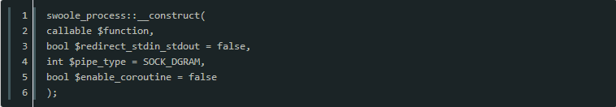

原文连接:https://www.cnblogs.com/heyue0117/p/11973746.html

Swoole进程间通信的方式
管道pipe
管道用于进程之间的数据交互，Linux系统本身提供了pipe函数用于创建一个半双工通信管道。半双工的通信方式中数据只能单向流动（一端只读一端只写），只能在具有亲缘关系（父子进程）的进程之间使用。
管道是进程间通信IPC中最基础的方式，管道有两种类型分别是命名管道、匿名管道。
匿名管道：专门用于具有血缘关系的进程之间，完成数据传递。命名管道：可以用在任何两个进程之间，Swoole中的管道都是匿名管道。
在Swoole中利用eventfd和UnixSock封装了两种管道，使得进程之间的通信更加灵活。
Swoole的Process模块内置了管道的方式用于进程间通信，在构建Process实例时只要开启了$pipe_type选项，Swoole底层会自动创建一个管道，这里需要说明的时，虽然名字上叫做管道，但实际上在新版Swoole中底层通信是通过UnixSock实现的，所以并不是真正意义上的Linux Pipe。
创建进程

管道类型$pipe_type可分为三种：
0表示不创建管道
1表示创建SOCK_STREAM类型的管道
2表示创建SOCK_DGRAM类型的管道
当启用$redirect_stdin_stdout后，$pipe_type选项将忽略用户参数，强制为1。
管道描述符
当进程被fork出来后，父进程和子进程中的Process对象会被设置上一个名为pipe的成员变量，存放着底层UnixSocket的描述符，父进程和子进程可以通过这个管道描述符来发送数据，也可以直接调用Process提供的read/write接口来收发数据。
管道读写
swoole_process->write(string $data) 向进程的管道中写入数据
swoole_process->read(int $buffer_size = 8192) 从进程的管道中读取数据
以上就是swoole进程间如何通信的详细内容，更多请关注我吧
有需要学习交流的友人请加入Swoole交流群的咱们一起，有问题一起交流，一起进步！前提是你是学技术的。感谢阅读！